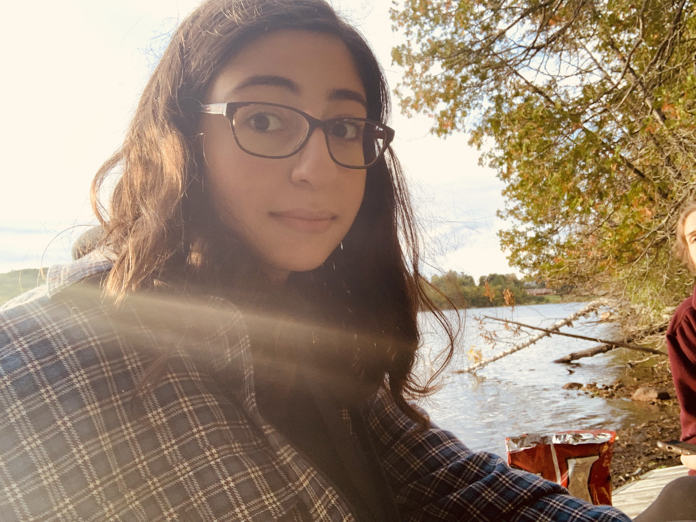

About Me
Hello, I'm Muriel Nasrallah, I was born May 1st 2003 in Ottawa and am currently living and studying in this city. My educational journey has seen a transition from civil engineering at CU to pursuing a passion for media design at Algonquin College. Alongside my studies, I work as a waitress at Gabriel Pizza.
In my free time, I like to express my interests through drawing, particularly portraits and some cartoon characters, as well as spending time playing video games with friends. While I may not have any notable achievements, I've learned the value of gratitude and maintaining a positive mindset can take you a long way in life.
No one is to blame for your future situation but yourself. If you want to be successful, then become 'Successful.' -Jaymin Shah
Hobbies
- Drawing
- Playing video games